Interface
The general structure of the interface of Arabesque is composed of three panel.
- The **central*panel** is for displaying the map - centered in France here.
The two side panels are for playing with information.
- The left panel is for dealing with geometries and geographical layers. Here are displayed CARTO Based map : Voyager and
- The right panel is for playing with the flow data set.

The central panel
The central part of Arabesque corresponds to the map view. It results from the choice of the layers to be displayed (from the left panel) and the filtering of the values of the links and nodes (from the right panel).
This central panel also presents different buttons allowing the implementation of primary actions.
Primary actions with butons
The white page of Arabesque is decorated with blue action buttons.
 Details of the different buttons
Details of the different buttons
 Successively zoom in/out - the same way as with the mouse wheel.
Successively zoom in/out - the same way as with the mouse wheel.
 Save the project in .ZIP for later use.
Save the project in .ZIP for later use.
 Export the map in .PNG including legends and and contributors’ sources for external backgrounds such as OSM or NaturalEarth data.
Export the map in .PNG including legends and and contributors’ sources for external backgrounds such as OSM or NaturalEarth data.
 Refocus and display the entire view without zooming in/out or panning.
Refocus and display the entire view without zooming in/out or panning.
Export the filtered flow data - the ones visible on the map - as a list file in .JSON format.
 Show/hide the legend.
Show/hide the legend.
 Switch to full screen display - with black background.
Switch to full screen display - with black background.
 Open/close the panels located on each side of the map.
Open/close the panels located on each side of the map.
Primary legend
A legend is automatically generated for each map for nodes and links plot.

The symbolization elements (size, color and opacity) of the nodes and links are included. Here (for the default map), it is the volume of flows and the degree of places that are represented.
The geographic panel
The left panel is to design the map :
- dealing with the background as the geographical/geometrical layers
- customize the design/style of the nodes and links features
map.
The management of geographic information is composed of two sub-sections:

 Return to the home page to start a new view.
Return to the home page to start a new view.
Actions on the background of the map are for changing projections of the current map and/or to add other layers.
Actions on the design/style is for (additional) geographic layers that have been adding through the previous action.
The Add Projection
Geographic layers can be reprojected, by choosing one of the proposed formulas:

Reprojection can also be used by entering an EPSG code.
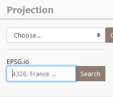
EXAMPLE: several projections of RICardo data

The Add Title
The Add Title section allows you to add a simple title to the view, useful when importing
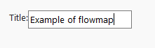
The Add layers

Five types of geographic layers can be loaded/add to construct the map (Add Node Feature and Add Link Features) and/or to contextualize the map (Add Base Layer, Add Tile Layers (OSM), Import GeoJson Layers).
Add Node Feature and Add Link Features leads to act on the design/style the flow features: to symbolize and customize the links and the nodes.
Add Node Features
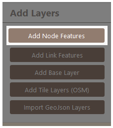
Add Node Feature leads to act on the design/style of the flow places features.
It is possible to set up all the graphic dimensions of the nodes by “Choose semio” for cartographic semiology as Bertin (1967). Hereby the general window.
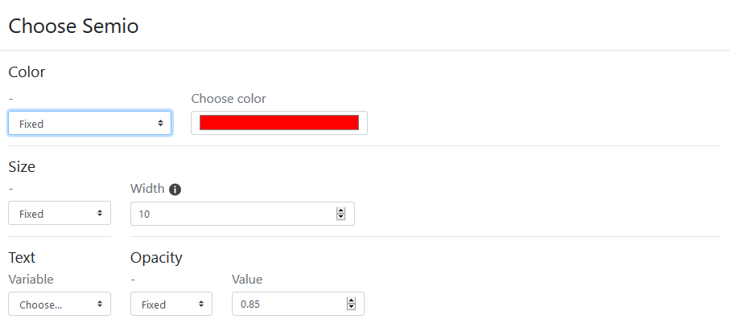
Color
The color of the nodes can be fixed (e.g. in black) or shaded in a range of tones.

Example : Application on the nodes. Symbolization of the barycenter of the zones with a circle shape (unique choice for instance) of fixed size and unique black color.

The color of the nodes can be shaded in a range of tones.
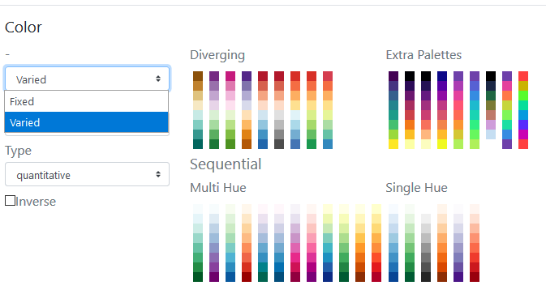
The reference for the color schemes is Cynthia Brewer palette for Diverging, Multi Hue and Single Hue. See: Color Brewer advices for maps. An Extra Palette is also proposed in Arabesque.
The color of the node can be set according to one of the variables (initial or calculated by Arabesque) present in the dataset.

By definition, the type of color range (Diverging/Multi Hue/Single Hue/Extra Palette) will have to be realized according to the type of the variable to represent (quantitative/qualitative, discrete/continuous, stock/ratio/scale, …).
 The progression (up/down) of the color range depends on that of the value range: it can be direct or inverse. The checked box means an inverse progression: a light color is applied to a strong value.
The progression (up/down) of the color range depends on that of the value range: it can be direct or inverse. The checked box means an inverse progression: a light color is applied to a strong value.

Size
The size of the nodes can be fixed and the weight defined.

The size can be weighted by a variable according to one of the initial or additional variables available in the dataset (hereby the balance).
 Three functions to set the size of the node according to the corresponding value are proposed: the square, the square root and the logarithm.
Three functions to set the size of the node according to the corresponding value are proposed: the square, the square root and the logarithm.

The ratio representing the max width in pixel of the graphic features can be defined - according to the map bounding box, to obtain an image with balanced features (neither too small nor too big).

Text
Textuals elements can also be added near the nodes.
 The text can be defined according to one of the variable available in the dataset.
The text can be defined according to one of the variable available in the dataset.
 .
.
The opacity of the text shade (currently set to black) can be set to a given value (here 0.85).

The opacity of the text shade (currently set to black) can be varied according to an indicator present in the dataset.

EXAMPLE : Application of the shade opacity on the nodes. Symbolization of the nodes with a circle shape of variable size according to a linear function, represented with a shaded black shade with opacity variation.


The opacity of the text shade can vary according to an indicator present in the dataset and according to a corresponding function which can be Linear, Square, SquareRoot or Logarithm and defined in an min/max interval: here between 0.25 and 0.85.
Add Link Features
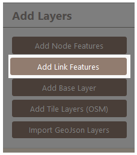
Add Link Feature leads to act on the design/style the flow interactions features.
It is possible to “Choose semio” for cartographic semiology as Bertin (1967). Hereby the general window.
The symbology of the links consists of setting their design parameters and applying visual variables to qualitatively enrich the map.
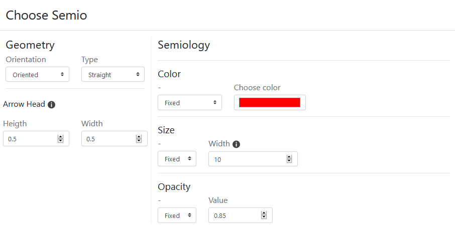
The colors of the links and nodes need to be defined, for reasons of visual harmony.
EXAMPLE: straight bilateral oriented links, unique black color.

Geometry
The geometry of the link can be oriented or not.
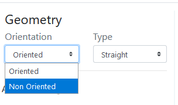
Oriented geometry takes into account the direction of the flow to define the graphic form of the sign.

Five form are available : straight (as euclidian distance symbolisation), straight no hook, Triangle, (line) Curve and Triangle curve.

Straight: The link is straight and oriented, with a half arrowhead
Straight no hook: The link is straight and oriented, it has a point without hook
Triangle: The link is straight and takes the shape of a triangle
Curve : The link is curved and oriented, its curvature is configurable.
Triangle curve: The link is curved and takes the shape of a drop of water, its curvature is configurable.
Non oriented: The link is straight, validated or not, it has no orientation.
The design of arrows
The arrow geometry - which corresponds to the visual shape variable - can be rectilinear or curvilinear.
The curvature of the line is generated according to the Chaikin algorithm which allows to parameterize its height and its base, with respect to the body of the link.

Arrow / Height curve: The value of the height of the head is the percentage of the map distance of the link (distance between the origin and the destination) used to define the maximum (map) width of the link - the width being itself a function of the value of the flow.
Arrow / Height: The value of ([0,1]) is that of the center of the curve; the point is identified by the indication of a distance from the origin node of the link.
EXAMPLE*: various geometry of a same Covid-19 flowmaps.

Semiology
Color
The Color of the links can be fixed ie it is identical for all links.
The reference for the color schemes is Cynthia Brewer palette for Diverging, Multi Hue and Single Hue. See: Color Brewer advices for maps. An Extra Palette is also proposed in Arabesque.

The color of the links can also be set according to one of the variables present in the dataset. It is based on a predefined tone gradient. The choice of the progression (divergent or not) will depend on the type of character (specified in the type field).

The choice to shade the links is associated here with a continuous (pseudo) character whose type (quantitative) must be specified.
Size:
Ideally, it is necessary to simultaneously set the size of the links. Ideally, it is necessary to simultaneously set the size using a discrete character. The links’s color using a continuous character (ratio or rate) - otherwise, the links will keep the same size and the result of the application of a nuance will be hardly visible.

Scale:
Four functions to set the size of the links according to the corresponding quantitative and discrete value are proposed: the linear, the square, the square root and the logarithm.

Ratio: it represents the max width in pixel of the graphic features that can be defined - according to the map bounding box, to obtain an image with balanced features (neither too small nor too big) regarding the scale function.
Opacity
The opacity of the link’s color can vary according to an indicator and also to a corresponding function which can be Linear, Square, SquareRoot or Logarithm and defined in an min/max interval: here between 0.25 and 0.85.
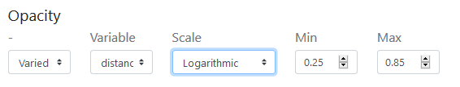
EXAMPLES:
- Black and white nodes under links as triangle curve with varied opacity.

- Black and white nodes on links as triangle curve with varied opacity.

See layout management section to manage the overlay of the layers.
Add Base Layer
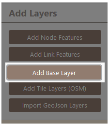
Add based layers consists in calling a remote geographic information layer, to contextualize the flowmap.

Several layers are available :


EXAMPLE: various geometry of a same Covid-19 flowmaps.
Add Tile Layers (OSM)

The Base type of tiles layers come from Open Street Map (OSM).
See for details: OSM tile server
 Several OSM tiles are available.
Several OSM tiles are available.

The second type of tile layer is the Overlay one, specially adapted for maps related to transportation, by sea (OPenSeaMap), by bike (Waymarkedtrails Cycling) or by hiking (Waymarkedtrails Hiking).


The third type of tile layer is the famous Stamen one.

For Stamen styles, see Stamen Open source tools
Text layer can be loaded, and present a style compatible to Stamen, CARTO and voyager nolabels.
 The four type of tile layers is CARTO basemap.
The four type of tile layers is CARTO basemap.

The CARTO base map styles are available here
EXAMPLE: Different layers to geographically contextualize a flow dataset.
 You can also add an external/personal tile.
You can also add an external/personal tile.
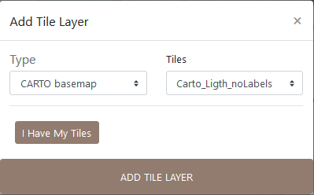
You can import additional tiles by specifying a URL, the sources/contributors and setting the rendering.
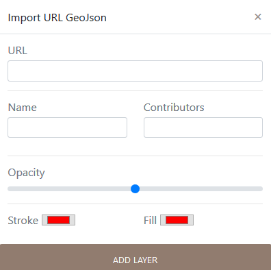
Import GeoJson Layers
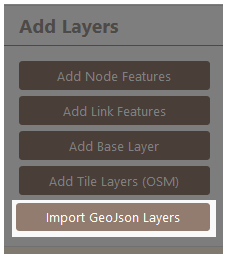
The statistical panel
The creation of a flow map with Arabesque can be broken down into the following main steps:
1. Importing flow datasets (links and/or nodes)
2. Processing flow datasets (creation of indicators, statistics)
3. Statistical data computing (filtering, …)
4. Geographical data computing (choosing the map background…)
5. Graphic symbolization for thematic flow mapping purposes
6. Flowmap decoration
7. Export
Links/flow dataset importation
Arabesque requires the loading of at least one origin-destination links/edges/flow data set. It is a matrix in .CSV (separator: comma) and long format.
You must also declare the 3 minimum fields required for flow mapping: those corresponding to the origin locations, to the destination locations and the flow values.
If the OD matrix is temporal or available for different categories, you must also choose an aggregation method.
On the homepage of(Arabesque), load at least one set of flow data.

- Click on the browse button
Application
Statistical dataset
Loading data SAGEO_RICardo_edges_small.csv.

The data must be in long format, with at least 3 columns : origin, destination, flow
The data must be in long format, with at least 3 columns to identify the origin, destination and volume of flows.
If the flow data are multiscalar (e.g. flows that concern several social groups, several goods transported or that occur on several dates), it is necessary to aggregate them when loading them into Arabesque.
Several aggregation functions are available (sum, average, median, maximum, minimum) to simplify the flows.

Note: This aggregation does not interfere with the geo-visualization possibilities that will remain available for all existing types.
Nodes/vertex dataset importation
If you have locational data associated with your ODs, you can load the corresponding node files with “Import Location”,
otherwise you can use predefined locations with “Preset Location”.
If you select “Import Location”, you must load a .GEOJSON or .CSV file, then choose the ID of the nodes and their lat/long geographic coordinates.
Application
Loading SAGEO_RICardo_nodes.csv data

The data must be in long format, with at least 3 columns to identify the place and the latitude (Y) and longitude (X) coordinates.
If you do not have a file for the geometry, you can use the codes identifying the reference data (e.g. INSEE codes of the French communes, ISO codes of the countries), to automatically geolocate your nodes. See Preset.
Preset nodes dataset
Example of pre-selection of French municipalities.

After loading the link and node files, Arabesque automatically performs a join of the common attributes between the two files.
Checking missing nodes/links features
Links that do not have an origin and/or destination ID are automatically deleted. Nodes that don’t have an ID code that allows them to be geographically located are also not kept.
The list of deleted nodes and links is displayed in a new window.

This list is for quick reference only. You must copy and paste it (into a text file, for example) if you want to keep the list of deleted entities : here 77 nodes have been deleted because they are not related to other nodes. The corresponding nodes ID are list.
After loading the link and node files, Arabesque automatically performs a join of the common attributes between the two files and computes indicator on botk links and nodes data.
The creation of a flow map with Arabesque can be broken down into the following main steps:
- Importing flow datasets (links and/or nodes)
2. Processing flow datasets (creation of indicators, statistics)
- Statistical data computing (filtering, …)
- Geographical data computing (choosing the map background…)
- Graphic symbolization for thematic flow mapping purposes
- Flowmap decoration
- Export
The links and nodes datasets are automatically modified when importing and Arabesque computes different indicators.
Data indicators pre processing
Indicators on links: Euclidean distance between the origin and destination entities
Indicators on nodes : see below the additional indicators () automatically calculated on the nodes of the RIcardo data
See below the indicators that have been automatically computed (ie the additional variable) on the nodes of the RIcardo data.

These indicators can be downloaded in . csv format (see Export and Save sections).
Loading links and nodes data into Arabesque leads to the creation of a default map, which is placed in the center of the interface.
Visualize a default flow map
Loading data in Arabesque leads to the creation of a default map to avoid visualizing a “spaghetti effect” when entering the application ; all the defined parameters can then be modified during the exploration.
By default, the links are represented in shades of blue and the nodes in red. The map is presented in the WGS84 projection, according to the lat/lon coordinates* declared during the import.
Except in the case of loading a projected geometry as input, the map is presented in WGS84.
Hereby is the Ricardo’s dataset default map with global statistic of the percent of links versus the percent of volume of flows and nodes.
 Only the 10% most important links (in value) are represented and symbolized (see the automatic legend) according to their intensity (the flow variable entered at import).
The corresponding nodes are symbolized according to their degree (variable calculated automatically during the import).
Only the 10% most important links (in value) are represented and symbolized (see the automatic legend) according to their intensity (the flow variable entered at import).
The corresponding nodes are symbolized according to their degree (variable calculated automatically during the import).